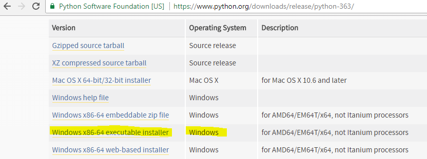
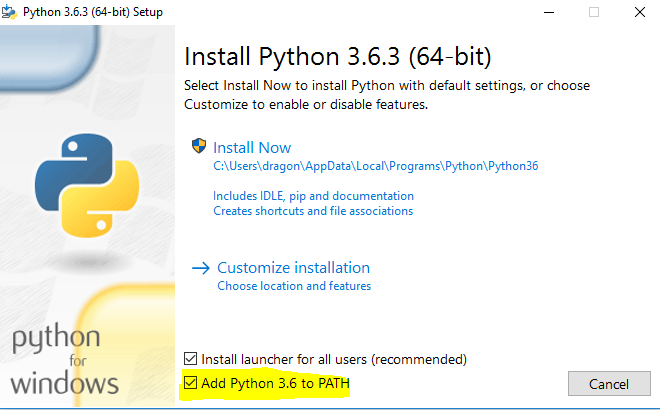
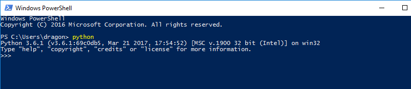
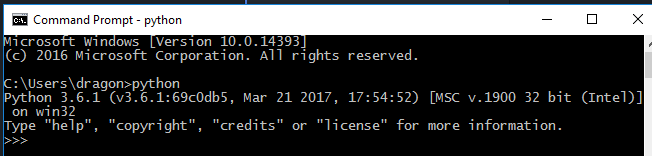

For Windows, you need to visit the official Python website at python.org and then, navigate via the Downloads tab to the Downloads for Windows and click the button to begin downloading the latest Python 3 version
https://www.python.org/downloads/release/python-363/

Direct link: https://www.python.org/ftp/python/3.6.3/python-3.6.3-amd64.exe
Double click the installation to start

Once the installation is finished, Go to command prompt and type python --version in command prompt. This shows python installation is successful and python is added to your PATH
C:\Users\dragon>python --version
Python 3.6.1Go to windows power shell or comamnd prompt and type python
Power Shell on Windows

Command Prompt on Windows
